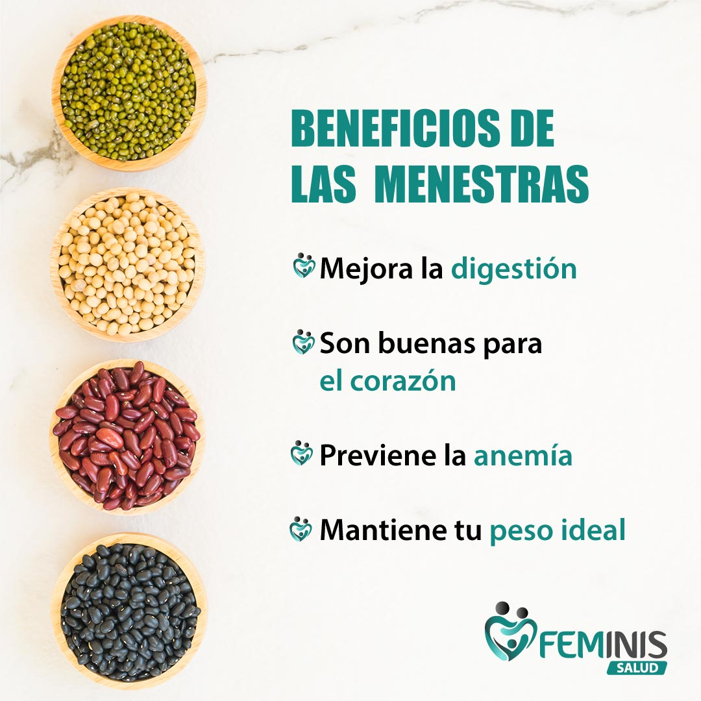
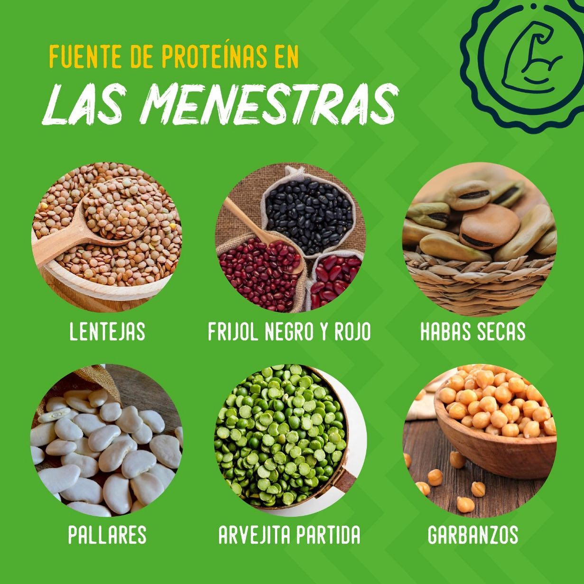

¿Por qué elegir nuestras menestras proteicas?
En un mundo donde la salud y el bienestar son prioridades, elegir los alimentos adecuados es fundamental para alcanzar nuestros objetivos. ¿Te has preguntado alguna vez cómo podrías mejorar tu rendimiento físico, potenciar tu energía y, al mismo tiempo, contribuir a un planeta más sostenible? La respuesta está en nuestras menestras proteicas.
Nuestras tortillas y hamburguesas de lentejas están diseñadas no solo para nutrir tu cuerpo, sino también para deleitar tu paladar. Cada bocado está repleto de proteínas de alta calidad, fibra y nutrientes esenciales, ofreciendo una alternativa deliciosa y saludable que te mantendrá lleno de energía durante todo el día. Imagina comenzar tu jornada con un desayuno lleno de sabor, o disfrutar de un almuerzo nutritivo que no solo satisface tu hambre, sino que también alimenta tus músculos.
Elegir nuestras menestras proteicas no es solo una decisión alimenticia; es un paso hacia un estilo de vida consciente. Al optar por productos elaborados con menestras, no solo estás cuidando de ti mismo, sino que también estás apoyando prácticas agrícolas sostenibles. Nuestras menestras requieren menos recursos para crecer y producen menos emisiones de carbono, contribuyendo así a la salud de nuestro planeta.
Te invitamos a ser parte de esta revolución alimentaria. Al elegir nuestras menestras proteicas, te unes a una comunidad que valora la nutrición, el bienestar y el cuidado del medio ambiente. Cada vez que optas por nuestras tortillas y hamburguesas, estás eligiendo un futuro más saludable para ti y para las generaciones venideras.
Así que, ¿por qué esperar? Dale a tu cuerpo lo que merece y descubre el poder de la alimentación saludable y deliciosa. Con nuestras menestras proteicas, no solo alimentas tu cuerpo; también inspiras un cambio positivo. ¡Únete a nosotros y da el primer paso hacia un estilo de vida más vibrante y sostenible!

